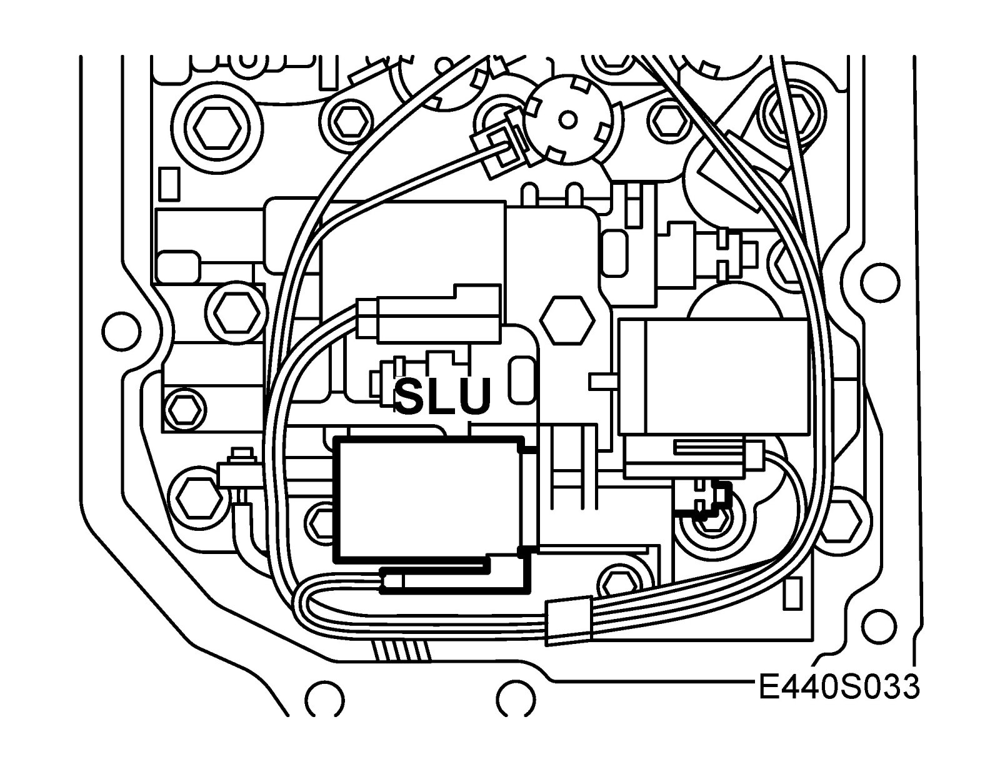
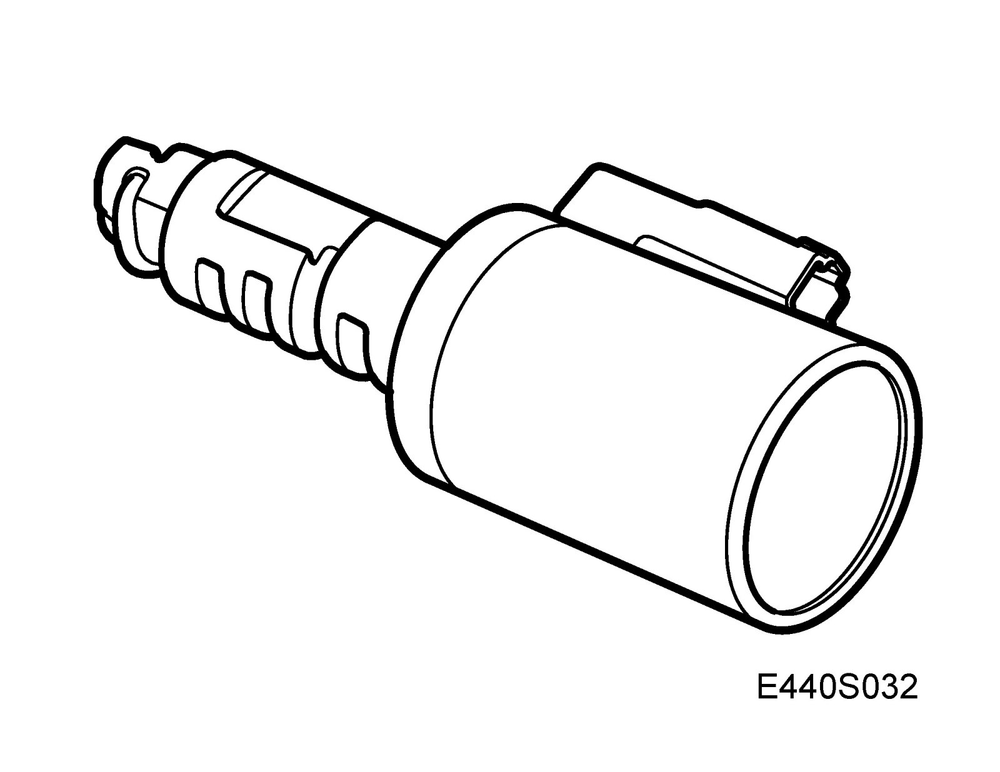
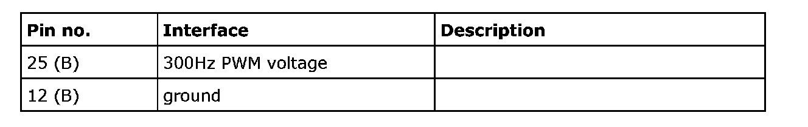
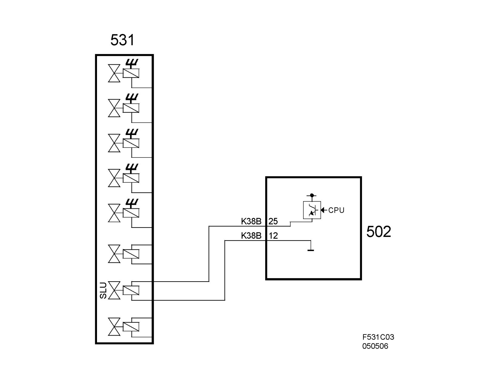

Solenoid Valves SLU, TCM
Solenoid valves SLU, TCM FA 57 (531)Location
Solenoid valves, TCM (531)

Main use
To regulate the oil pressure to the lock-up clutch.
Type
Electromagnetic, PWM governed.

Activation
The solenoid is governed from pin 25 (B) on TCM using a 300Hz PWM signal. Grounding takes place on pin 12 (B) on TCM. The current varies between 0-1000 mA. The solenoid is closed when current is not applied. 0A = low oil pressure 1000mA = high oil pressure.

